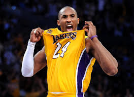

curso utn
objetivo
iniciacion en programacion
mini bio
soy francisco, tengo 33 años, soy jugador de basquet en hurlingham

" frameborder="0">
Listas
MATEriales
- Mate
- Termo
- Yerba
- Repasador
- Bombilla
Preparacion
- calentar agua
- poner yerba en mate
- llenar termo con agua caliente
- mojar un poco la yerba
- poner la bombilla